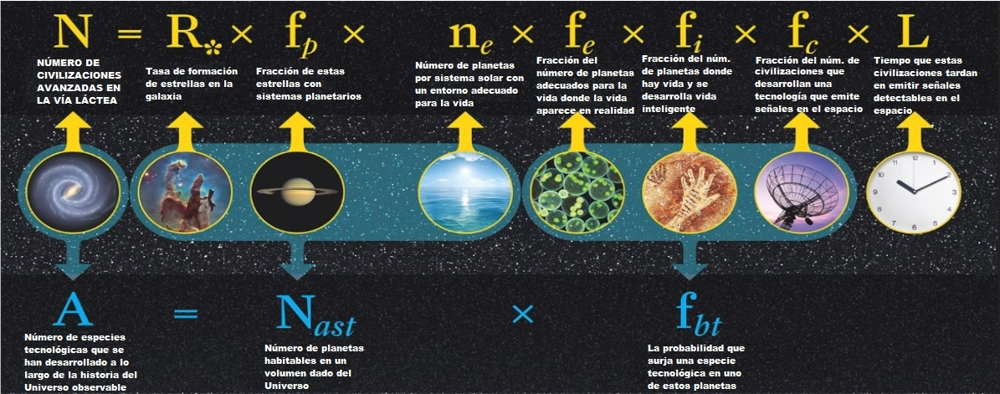
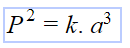
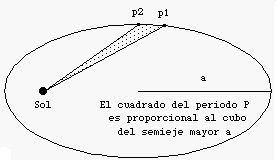
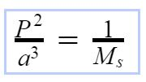
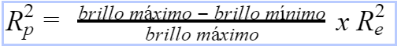
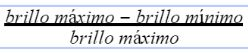
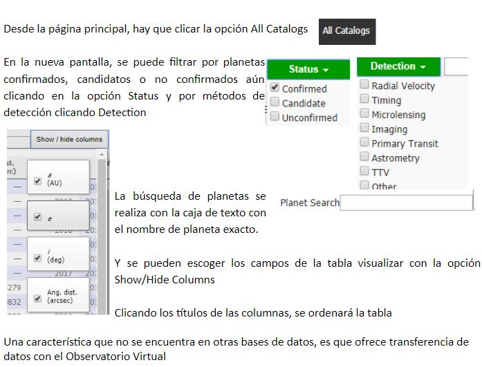
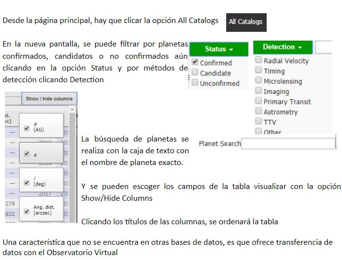

PRESENTACIÓN DEL PROYECTO
El objetivo del proyecto Escape Earth es ofrecer material didáctico actualizado sobre astronomía para el profesorado de secundaria en forma de proyecto gamificado. Se siguen las metodologías de trabajo basado en proyectos, retos y trabajo colaborativo, además de la gamificación y la controversia. Asimismo, se fomenta el uso de las TIC y el uso de datos reales que el alumnado puede extraer de bases de datos astronómicas online.
El nombre del proyecto, Escape Earth, pretende emular los juegos de tipo “Escape Room” donde los participantes deben escapar de una habitación cerrada con la ayuda de ciertas pistas. El reto para los alumnos es descubrir cuál es el mejor exoplaneta donde la humanidad debe huir. A lo largo de los talleres, irán evaluando los parámetros proporcionados y finalmente deberán justificar su elección del exoplaneta, describiendo su habitabilidad a partir de sus características.
En total se han desarrollado 13 talleres descargables de aproximadamente de unas dos horas cada uno, donde se describen las competencias clave, los contenidos curriculares y se detallan las actividades. El proyecto propuesto permite, por un lado, trabajar independientemente cada tema y escoger las actividades que se adapten mejor a cada grupo-clase, o bien, en la opción gamificada seguir todos los talleres.
La pregunta reto que impulsa todo el proyecto proviene de la frase del famoso científico Stephen Hawking “No tenemos futuro si no colonizamos el espacio”.
En los siguientes enlaces se encuentran disponibles el manual de usuario y la memoria del proyecto, que se ha realizado en el marco del máster de Astronomía y Astrofísica de la Universidad Internacional de Valencia.

Esta obra está sujeta a una licencia de
Reconocimiento-NoComercial 4.0 Internacional de Creative Commons
Currículo y gamificación
Contenido y Competencias básicas
El proyecto reúne los contenidos y competencias básicas de:
- 4º ESO Cultura científica
- 1º ESO Biología y Geología: Bloque de Modelo del Universo
- 2º ESO Física y Química: Bloque de controversias científicas
- 3º ESO Biología y Geología: Bloque de controversias científicas
- 4º ESO Física y Química: Modelo de energía, interacción física, atómicomolecular
Se recomienda aplicar el proyecto en 4º de la ESO, en el marco de la asignatura optativa de Cultura Científica. Sin embargo, también se puede aplicar en 2º ó 3º en función de si se desea profundizar más en el contenido de fuerzas y energía (2º Física y Química) o en el bloque de ecosistemas y actividades humanas (3º Biología y Geología).
Las competencias básicas trabajadas son:| Dimensión | Competencia |
|---|---|
| Indagación de fenómenos naturales y de la vida cotidiana | Competencia 1. Identificar y caracterizar los sistemas físicos y químicos desde la perspectiva los modelos para comunicar y predecir el comportamiento de los fenómenos naturales |
| Competencia 2. Identificar y caracterizar los sistemas biológicos y geológicos desde la perspectiva de los modelos para comunicar y predecir el comportamiento de los fenómenos naturales | |
| Competencia 3. Interpretar la historia del Universo de la Tierra y de la vida utilizando los registros del pasado | |
| Competencia 4. Identificar y resolver problemas científicos susceptibles de ser investigados en el ámbito escolar que impliquen el diseño, la realización y la comunicación de investigaciones experimentales | |
| Objetos y sistemas tecnológicos de la vida cotidiana | Competencia 6. Reconocer y aplicar los procesos implicados en la elaboración y validación del conocimiento científico. |
| Competencia 7. Utilizar objetos tecnológicos de la vida cotidiana con el conocimiento básico de su funcionamiento, mantenimiento y acciones a hacer para minimizar los riesgos en la manipulación y en el impacto medioambiental | |
| Medio ambiente | Competencia 10. Tomar decisiones con criterios científicos que permitan prever y evitar o minimizar la exposición a los riesgos naturales. |
| Competencia 11. Adoptar medidas con criterios científicos que eviten o minimicen los impactos medioambientales derivados de la intervención humana. |
El resumen de cada taller se puede encontrar en el siguiente TimeLine, y con más detalle en el Manual de Usuario.
Gamificación
Para introducir el proyecto se ha creado el siguiente vídeo
y la presentación interactiva y gamificada de Genial.ly
Los alumnos se organizarán en equipos de investigación base (4-5 personas), donde cada uno de ellos tendrá un rol o especialidad, que puede ser rotativo. En momentos determinados, se juntarán los especialistas de todos los grupos para trabajar en un taller en concreto y volver a sus equipos base para transferir lo aprendido. Los roles propuestos son:
- Supervisor
- Moderador
- Portavoz
- Secretario
- Informático
Se ha añadido el rol de informático debido a que durante el proyecto se utilizan diversos simuladores, acceso y búsqueda de datos bases de datos on-line, así como aplicaciones móviles. La primera tarea del informático será crear su propia tarjeta, similar a las demás, creadas con Trading Card
Al conseguir los resultados de un reto, se entregarán a los alumnos insignias, con los datos que serán necesarios más adelante. Las insignias también son un método para mantener el ritmo, la tensión y el equilibrio entre los diferentes equipos. Si se ve que un equipo se avanza demasiado o, por el contrario, va muy lento, se conseguirá regular el grupo completo con las insignias.
La presentación interactiva y gamificada de Genial.ly, incluye las siguientes insignias que simbolizan los elementos imprescindibles para la vida. Estas insignias también se pueden imprimir en una máquina para irlas entregando como premios a medida que se avance por las diferentes fases del proyecto.
El proyecto Escape Earth también fomenta la coevaluación y la auto-evaluación. Al trabajar en un entorno cooperativo, se evaluará el trabajo en equipo en sí, además de las competencias propias de las materias.
Con el fin de trabajar la dimensión epistémica de la ciencia, se propone establecer niveles de experteza para que los grupos puedan asesorar de manera cruzada las publicaciones de otros grupos, tal y como se actúa en la ciencia moderna. Cada vez que el grupo descubra algún parámetro del exoplaneta a descubrir, podrá publicar un artículo o un vídeo, por ejemplo en la plataforma Flipgrid. Esta publicación será revisada por otros grupos.
La gestión de las publicaciones se puede realizar mediante la aplicación Progress Indicator de Flippity que transforma una hoja de cálculo del drive a una visualización más cómoda. El alumnado pasará así de un nivel novato a experto según el número de publicaciones aceptadas por "la comunidad científica". Si acaso, se podría diferenciar entre publicaciones escritas o vídeos y es recomendable un debate donde se reflexione si el número de publicaciones debe pesar más o menos que la trascendencia de la publicación en sí.
Requisitos de instalación
La página web usa simulaciones realizadas en Flash de la Universidad de Nebraska - Lincoln, que también se pueden descargar según explica el siguiente video:
|
|
|
Dado que Flash se ha desactivado de algunos navegadores, se recomienda instalar la extensión Flash Player for Chrome, que se puede encontrar para Chrome en su web store
|
|
En el caso de estar navegando con FireFox, se puede descargar de aquí.
|
|
Contacto
Para cualquier sugerencia o duda, podéis contactar a través del siguiente formulario:
Recomendaciones

Se recomiendan las siguientes lecturas, películas, documentales, canales de youtube, blogs...:
- Curso básico de astronomía, de Ediciones Omega
- 50 descubrimientos, ideas y conceptos en Astronomía, de François Ressin
- El Universo en tu mano, de Christopher Galfard
- Breves respuestas a las grandes preguntas, de Stephen Hawking
- La puerta de los tres cerrojos (1), de Sonia Fernández-Vidal
- La puerta de los tres cerrojos. (2) La senda de las cuatro fuerzas, novelas juveniles, de Sonia Fernández-Vidal
- Contact, de Carl Sagan
- Guía de campo de las estrellas y los planetas, de Ediciones Omega
- Trilogía de la fundación (y más), novelas de ciencia ficción, de Isaac Asimov
- We have no idea, guía del Universo desconocido, de Jorge Cham y Daniel Whiteson
- 100 historias de la aventura espacial, historia y anécdotas, de Joan Anton Català
- Los diálogos. Conversaciones sobre la naturaleza del Universo,cómic de divulgación de Clifford Jonhson
- Cuántix: La fisica cuántica y la relatividad en cómic,cómic de divulgación de Laurent Schafer
- Las mujeres de la Luna, historia sobre científicas
- La llegada, de Denis Villeneuve
- Cosmos, con Carl Sagan y Neil deGrasse
- IO, the last on Earth, de Jonathan Helpert
- Interestellar, de Christopher Nolan
- Gravity, de Alfonso Cuarón
- Contact, de la novela de Carl Sagan
- Una odisea del espacio, de Stanley Kubrick
- Marte, de Ridley Scott
- Wonders of the Universe, (en inglés) con Brian Cox
- Nuestro planeta (One strange rock) serie con Will Smith
- La generación de Marte documental con Neil deGrasse
- Marte docudrama de ciencia ficción
- Otras galaxias (Alien worlds) documental de ciencia y naturaleza ficción
- Quantum Fracture
- Date un vlog, de Javier Santaolalla
- Startalk, (en inglés) de Neil deGrasse
- PBS Space time, (en inglés)
- Kurzgesagt (in a nutshell), (en inglés)
- PHD Comics, (en inglés)
- José Manuel Nieves
- Océano estelar
- Miles de millones
- Ciencia de sofá
- Astroafición
- Ciencia y tecnología
- Ciència en confinament de Joan Anton Català
Applets de la NASA
Se recomienda realizar observaciones reales mediante los programas, que los observatorios ofrecen de horas de telescopios, con el fin que los estudiantes realicen sus propias investigaciones. En el siguiente muro virtual, se exponen algunos proyectos interesantes:

Cuestionarios
Durante la elaboración de la memoria, se difundieron sendos cuestionarios a profesores y alumnos de secundaria:
En el siguiente muro virtual hay colgadas diversas noticias y enlaces sobre los problemas que acechan a la Tierra. Agrupad a parte los problemas y las posibles soluciones, añadiendo otros temas, si se cree necesario.
Existen diversos criterios geofísicos, geoquímicos y astrofísicos que permiten a un planeta o satélite desarrollar y mantener entornos para la vida:
La búsqueda de vida fuera de la Tierra tiene algo en común: la búsqueda de agua. El hecho que en la Tierra exista agua, depende de la energía que viene del Sol y de la distancia que está la Tierra del Sol. La región de cualquier sistema planetario donde puede haber agua líquida se llama zona de habitabilidad, tema que se trata en más profundidad en el Taller 4.4. Exoplanetas. Zona de Habitabilidad Vs. Habitabilidad
Nuestro Sol es del tipo G y es bastante estable, comparado con otros tipos de estrellas que emiten fulguraciones de rayos gamma y rayos X letales para la vida. Este tema se trata con más profundidad en el taller 3. Estrellas
Si la Tierra tuviera una órbita más excéntrica, quizás en ciertos períodos del año, no estaríamos en la Zona de Habitabilidad, pudiendo estar demasiado cerca o lejos del Sol.
Un planeta más pequeño que la Tierra no tendría suficiente gravedad para retener una atmósfera, que es vital para protegernos de los rayos cósmicos y además mantener el efecto invernadero. Suficiente masa es importante también para mantener activo el núcleo, que impulsa el movimiento de las placas tectónicas. En contraste, Marte no tiene fuerza para retener su atmósfera y geológicamente está “muerto”.
El planeta debe rotar (girar sobre sí mismo) para dar oportunidad al desarrollo de la vida y no girar respecto al Sol como la Luna hace con la Tierra, mostrando siempre la misma cara. La rotación (ciclo del día y la noche) debería ser relativamente rápida, para que la diferencia de temperatura no sea pronunciada. También debe rotar relativamente rápido para que el núcleo de hierro al girar produzca un campo magnético.

El campo magnético protege a la Tierra de los rayos cósmicos, que destruirían la atmósfera y de la radiación ultravioleta, que puede destruir nuestra visión, quemarnos la piel, y además dañar nuestro ADN.
La atmósfera de la Tierra hace posible que la temperatura media sea de unos 15ºC. Gracias a los gases de la atmósfera, se produce el efecto invernadero de forma natural. Además, la atmósfera también nos protege de la luz ultravioleta, que puede destruir nuestra visión, quemarnos la piel, y además dañar nuestro ADN. Este tema se trata con más detalle en el Taller 4.3. Exoplanetas. Temperatura.pdf
La existencia de la Luna permite que la inclinación de la Tierra sea estable. Sin su existencia, la Tierra giraría como una peonza, de manera que el clima sería caótico. Además, las mareas provocadas por la Luna, contribuyen a la dinámica de los océanos.
Una estrella como el Sol contiene elementos metálicos que favorecen la formación de planetas rocosos como la Tierra, que pueden albergar agua y, por lo tanto, vida. Los planetas acuáticos u oceánicos pueden también albergar vida si están suficientemente cerca de su estrella o tienen atmósferas que producen un fuerte efecto invernadero. El planeta GJ 1214b es un candidato a planeta océano.
La estructura del sistema planetario también puede influir en la posibilidad de formación de planetas rocosos en la zona de habitabilidad. Por ejemplo, se calcula que el cinturón de asteroides no pudo llegar a formarse como planeta debido a la influencia gravitatoria de Júpiter. Si Júpiter estuviera en el lugar de Marte, seguramente la Tierra no se habría llegado a formar. Por otra parte, la localización de Júpiter en nuestro Sistema Solar, nos protege de amenazas externas, como meteoritos y cometas.
Esta aplicación de la NASA, Alien Safari, que requiere el plugin de Flash para ejecutarse, permite explorar los organismos extremófilos de nuestro planeta. Mientras la Tierra da vueltas, irán apareciendo sus hábitats marcados en rojo.
La música se puede deshabilitar con el botón music on/off del extremo inferior derecho.
La fórmula de Drake es una ecuación para estimar la cantidad de civilizaciones en nuestra galaxia, la Vía Láctea, capaces de comunicarse con el exterior, emitiendo señales. Si N es menor que 1, entonces la vida en la Tierra es rara, teoría que afirma que la vida surgió de una cadena de posibilidades y por lo tanto se trata de un fenómeno muy improbable. Si N es mayor que 1, la vida debe ser relativamente común en el Universo. Es el llamado principio de mediocridad o de Copérnico, que afirma que la Tierra no tiene nada de especial.
| Número de civilizaciones avanzadas en la línea láctea = |

Empareja los planetas y encuentra el único planeta que no es de nuestro Sistema Solar
¿Sabes cuál es cada planeta y en qué orden va?

Las regiones de residuos en nuestro Sistema Solar de mayor a menor cercanía son:
- NEO (Objetos Cercanos a la Tierra): objetos (asteroides, meteoros, cometas) que orbitan cerca de la Tierra, de los cuales se monitorizan los PHO (Potentially hazardous object), cuando se acercan a menos de 0,005 UA.
- Cinturón principal de asteroides: región entre Marte y Júpiter, a 2-4 UA. El extremo exterior está formado por condritas carbonáceas y el interior por condritas ordinarias. Los 4 objetos más grandes y que suman más de la mitad de toda la masa son Ceres, Vesta, Pales e Higia. El 80-90% de los objetos que colisionan con la Tierra provienen del cinturón principal.
- Cinturón de Kuiper: región que contiene objetos formados por roca y/o hielo más allá de la órbita de Plutón, entre 30-50 UA. Los cometas de periodo corto provienen del cinturón de Kuiper, como el famoso cometa Halley, de la imagen.
- Nube de Oort: región que contiene "hielo sucio" mucho más allá de la órbita del Cinturón de Kuiper, a 50.000 UA. Se calcula que debe haber alrededor de 1013 objetos. Los cometas de periodo largo provienen de la Nube de Oort
Los cometas están débilmente influidos por la gravedad de la Tierra y, a diferencia de las órbitas casi circulares de los planetas, sus órbitas normalmente son ladeadas y con una alta excentricidad. Están formados por hielo, hecho que provoca que a medida que se acercan al Sol, parte de este hielo se funda, liberando residuos de polvo y roca que se diseminan a lo largo de su trayectoria, formando la conocida cola.
Una de las ideas equivocadas más extendidas en astronomía se refiere a que las estaciones del año se deben a la distancia variable de la Tierra al Sol. Aunque las órbitas de los planetas son elípticas, es importante señalar que la excentricidad en el caso de la Tierra es baja (0,0167), y por lo tanto su órbita es casi circular y la distancia al Sol no varía mucho. De hecho, la Tierra está más cerca del Sol (perihelio) durante el invierno del hemisferio norte, en enero y 5 millones de Km. más lejos (afelio) durante el verano, en julio. En realidad, las estaciones del año se deben a la inclinación del eje de giro de la Tierra respecto al plano de su órbita respecto al Sol. Algunas regiones reciban distinta cantidad e intensidad de luz solar según la época del año.
Dependiendo de la latitud y de la altura, los cambios meteorológicos son o bien mínimos como en el ecuador, o máximos, como en las zonas de latitudes medias y subtropicales, donde se experimentan las cuatro estaciones.
En la simulación de la izquierda, moviendo la Tierra alrededor del Sol, se puede comprobar cómo varía la inclinación de los rayos Solares. El muñeco también se puede trasladar para constatar el cambio según la latitud. Al pulsar start animation (abajo a la derecha), se ve cómo transcurre un año terrestre.
La segunda ley, conocida como la ley de las áreas, tiene como consecuencia que el planeta recorre áreas iguales en tiempos iguales y el efecto es que la velocidad del planeta aumenta a medida que se acerca al Sol.
La tercera ley de Kepler establece que el cuadrado del período orbital de un planeta es proporcional al cubo de su semieje mayor. El semieje mayor (a) es la mitad del diámetro más largo. El video ilustra el comportamiento de un planeta en su órbita debido a la tercera ley de Kepler.
 
Partiendo de la tercera ley de Kepler y conociendo el periodo orbital (P) del planeta buscado y de la masa de la estrella Ms, se deduce el semieje mayor de la órbita (a). Sabemos que:
|  |
Introduce los datos conocidos:
|
||||||
Mediante este simulador realizado en Flash de la Universidad de Nebraska - Lincoln, se puede comprobar cómo un planeta orbita el Sol de acuerdo con las leyes de movimiento de Kepler. La animación se activa con el botón Start Animation . La posición del planeta en el diagrama puede ajustarse también arrastrándolo con el ratón del ordenador.
El tamaño y la excentricidad de la órbita del planeta se pueden configurar con los controles deslizantes en el panel Orbit settings (Configuración de la órbita). Se puede escoger un planeta de nuestro Sistema Solar en el desplegable y los parámetros se ajustan automáticamente. Dado que los planetas tardan meses o años en orbitar el sol, la animación se muestra acelerada, pero se puede regular la velocidad en años por segundo en el panel Animation Controls (Controles de animación).
En el panel de Visualization options (Opciones de visualización) se puede escoger mostrar las órbitas de los demás planetas del sistema solar, aunque hay que tener en cuenta que, aunque las órbitas de los planetas se muestran en el mismo plano, no es así en realidad.
El panel inferior permite controlar con pestañas las opciones específicas de cada una de las leyes de Kepler. Los barridos creados con los controles de la segunda ley de Kepler se pueden arrastrar también con el ratón del ordenador. La pestaña de Características Newtonianas muestra los vectores de velocidad y aceleración del planeta.
Mediante el cálculo de la pérdida de luminosidad de la estrella en el momento de tránsito, se puede calcular el radio del planeta, conociendo previamente el radio de la estrella. Sabemos que:

donde Rp es el radio del planeta a buscar y Re es el radio de la estrella.
A la relación  se le llama Profundidad de tránsito.
Introducimos los datos conocidos:
| Brillo máximo | |
| Brillo mínimo | |
| Profundidad de tránsito (si no se dispone del brillo) | |
| Radio de la estrella (en relación al Sol) | |

La luminosidad que llega de una estrella puede representarse en función del tiempo como una curva de luz.
Introduce los datos conocidos:
| Luminosidad en Tiempo 1 | |
| Luminosidad en Tiempo 2 | |
| Luminosidad en Tiempo 3 | |
| Luminosidad en Tiempo 4 | |
| Luminosidad en Tiempo 5 | |
| Luminosidad en Tiempo 6 | |
| Masa (M terrestre) | |
| Radio (Km) | |
La temperatura de equilibrio (Teq) de un planeta entre la radiación que absorbe de su estrella y la radiación que emite, viene dada por:

donde T S es la temperatura de la estrella, A el albedo, RS el radio de la estrella, y a el semieje mayor de la órbita del planeta.
Introduce los datos conocidos:
| Temperatura de la estrella (K) | |
| Albedo | |
| Radio de la estrella (Radios solares) | |
| Semieje mayor de la órbita (Radios solares) | |
Moviendo las barras rojas de los gráficos, comprueba que la localización del sistema planetario en la Galaxia también es vital para la estabilidad de la vida.
La primera gráfica, abajo a la izquierda, muestra que cuanto más cerca del núcleo de la Galaxia se está, más riesgo hay de emisión de rayos X, gamma y explosiones de supernova, radiaciones que son letales para la vida.
La segunda gráfica, abajo a la derecha, indica la distribución de elementos más pesados que el H y el He, de manera que cuanto más alejado se está del centro, más “pobre” es el entorno en elementos químicos metálicos, hecho que no permite la formación de planetas rocosos y por lo tanto tampoco favorece la vida. Se puede comprobar cómo el Sol está en una localización intermedia ideal para la vida, que se estima que comprende un anillo entre 4 y 10 kiloparsecs.
Observa cómo la Zona de habitabilidad (en verde) cambia en función del tipo de estrella.
- Enana marrón: 0,001 Unidades astronómicas
- Enana roja (tipo M): de 0,032 a 0,3 u.a.
- Enana naranja (tipo K): de 0,5 a 1 u.a.
- Enana amarilla (tipo G): de 0,8 a 2 u.a.
- Enana blanca-amarilla (tipo F): de 1 a 3,7 u.a.
Existen varias Base de Datos online especializadas en Exoplanetas, unas más profesionales que otras:
1.openexoplanetcatalogue.com
2. exoplanet.eu
 

3. exoplanets.org
4. exoplanetarchive (NASA)
5. hzgallery.org
- James Web Telescope
- Kepler/K2
- WASP/SuperWASP
- TESS
- COROT
Se pueden incluir los siguientes elementos:
- página web oficial, si tiene,
- año de lanzamiento y fin, si es el caso,
- entidades que participan
- métodos utilizados
- exoplanetas descubiertos
Se proponen los siguientes productos finales:
|
La paradoja de Olbers, se pregunta cómo es que el cielo es oscuro por la noche si:
· el Universo es infinito y · las estrellas están uniformemente distribuidas por todo el Universo. Si las premisas son ciertas, el cielo debería ser blanco, no oscuro, porque siempre deberíamos ver estrellas brillando. Aunque la luminosidad disminuye con el cuadrado de la distancia recorrida y, por lo tanto, la intensidad percibida desde la Tierra es menor, el cielo no debería ser negro por la noche, porque las diferentes capas infinitas de estrellas se superponen. La explicación más aceptada de la paradoja se resuelve con dos argumentos: 1. El Universo no es infinito, existe desde el Big Bang, hace 13.800 millones de años. Este hecho provoca que la luz de las estrellas más distantes aún no nos haya llegado. 2. El Universo se está expandiendo, de manera que la luz de las estrellas más lejanas llega “con menos energía”, y por lo tanto menos brillante. |
|
El conocimiento que tenemos del Universo primordial (de 0 a 2.5 x 10-5 segundos) está basado en conjeturas. Se cree que inicialmente había 10 dimensiones que colapsaron en 4. Al inicio, las 4 fuerzas fundamentales de la naturaleza (gravitación, fuerza nuclear fuerte, electromagnética e interacción nuclear débil) estaban unidas en una sola y se fueron separando. El Universo se expande de manera acelerada en un fenómeno llamado inflación, hecho que provocó el enfriamiento progresivo del Universo.
En el Universo temprano se suceden diferentes épocas (hadrónica, leptónica, fotónica), que se caracterizan porque el Universo estaba compuesto de distintas combinaciones de partículas elementales: hadrones, leptones, fotones, protones, neutrones, electrones... Se produce la recombinación y el desacoplamiento: después de unos 400.000 años del Big Bang, el plasma se enfrió lo suficiente (3500 K) para permitir que los electrones y los protones formaran los primeros átomos de Hidrógeno. Los fotones fueron capaces de disociarse y viajaron libremente por el espacio por primera vez. “Se hizo la luz”. Aún se puede “oír” su ruido en la llamada radiación de fondo de microondas. Uno de cada diez puntos de la “nieve” de un televisor analógico proviene del fondo de microondas.
Radiación de fondo de microondas
Más adelante se empezaron a formar estructuras: de manera jerárquica, se fueron formando estrellas, galaxias, cúmulos: por colapso gravitacional, se formaron los primeros quásares y galaxias activas y aparecieron las primeras estrellas de población III, que son las más viejas del Universo, a partir de Hidrógeno, Helio y Litio. La materia se fue colapsando para formar galaxias. Nacen las estrellas de población II, que son “hijas” de las de población III. Más tarde aparecen las estrellas de población I, las más jóvenes, como nuestro Sol. Las galaxias se atraen para formar grupos, cúmulos, supercúmulos.
Hubble dedujo que el universo se está expandiendo y determinó la ley de Hubble, que establece que el desplazamiento al rojo de una galaxia, y por lo tanto su velocidad de alejamiento, es proporcional a la distancia a la que se encuentra, es decir que cuanto más lejos se encuentra una galaxia, más rápido se aleja de nosotros. Hoy en día, la expansión acelerada continúa.